Geraldus Catur Gigih Wahyudi
Mahasiswa Sistem Informasi
Universitas Indonesia
Mahasiswa Sistem Informasi
Universitas Indonesia
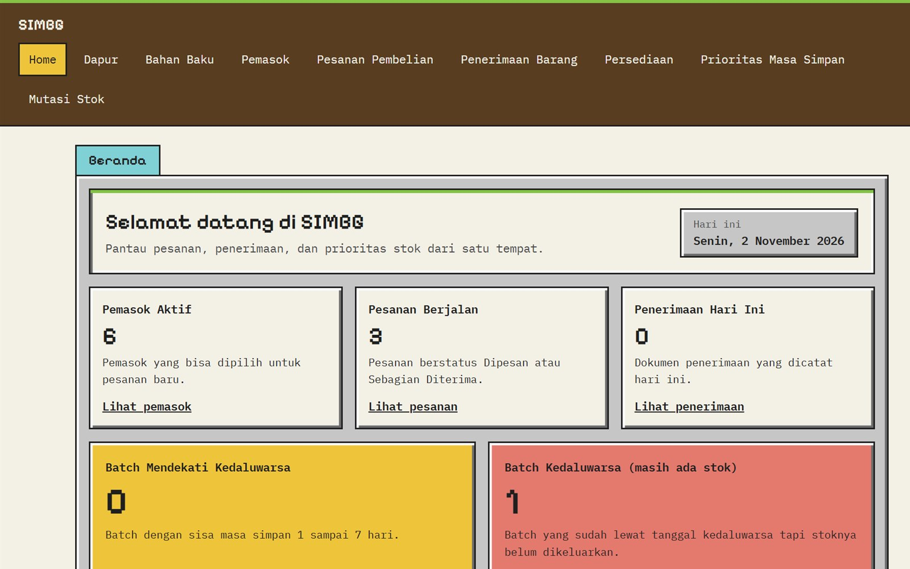
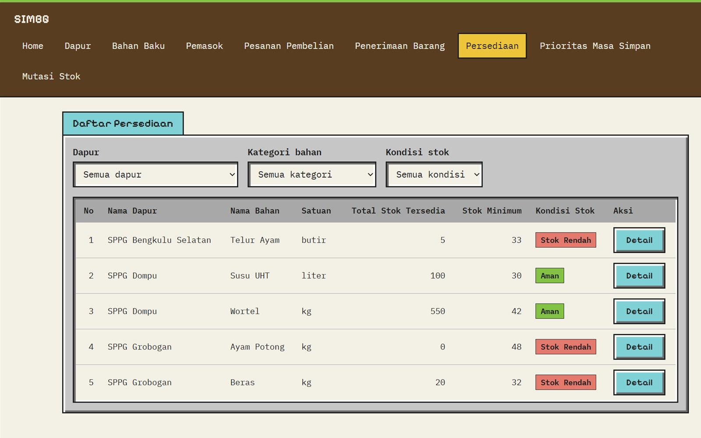
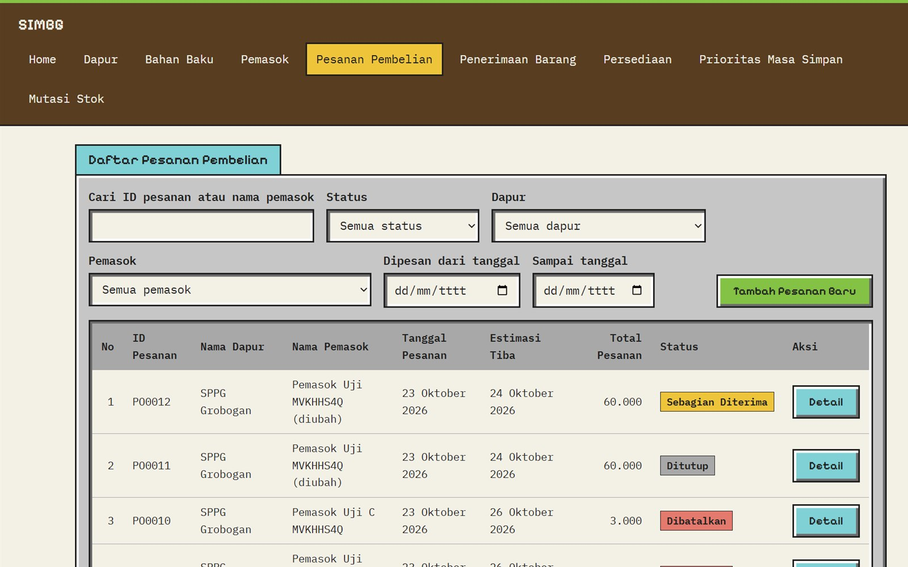
Modul SIMBG untuk petugas dapur. Isinya pencatatan pemasok, pesanan bahan, penerimaan barang, stok per batch, sampai koreksi dan pembuangan stok kedaluwarsa.
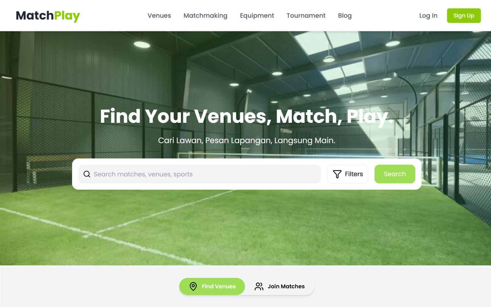
Web untuk cari lapangan olahraga dan teman main, lengkap dengan booking dan matchmaking. Bagian saya modul blog.
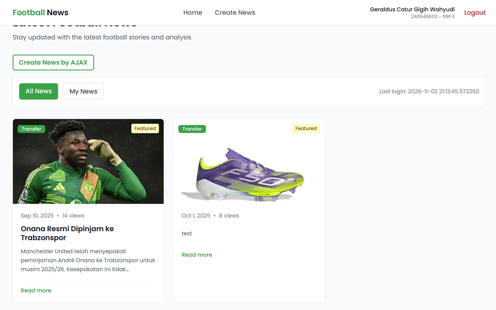
Portal berita sepak bola tempat pengguna bisa login lalu menulis dan mengelola beritanya sendiri.
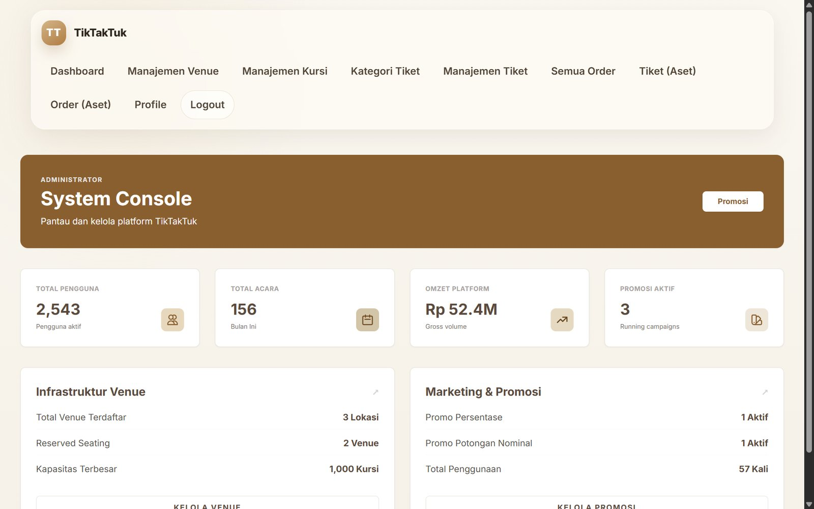
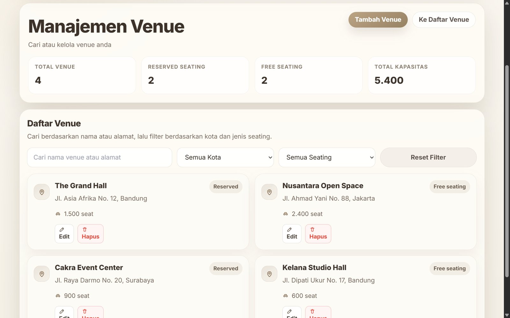
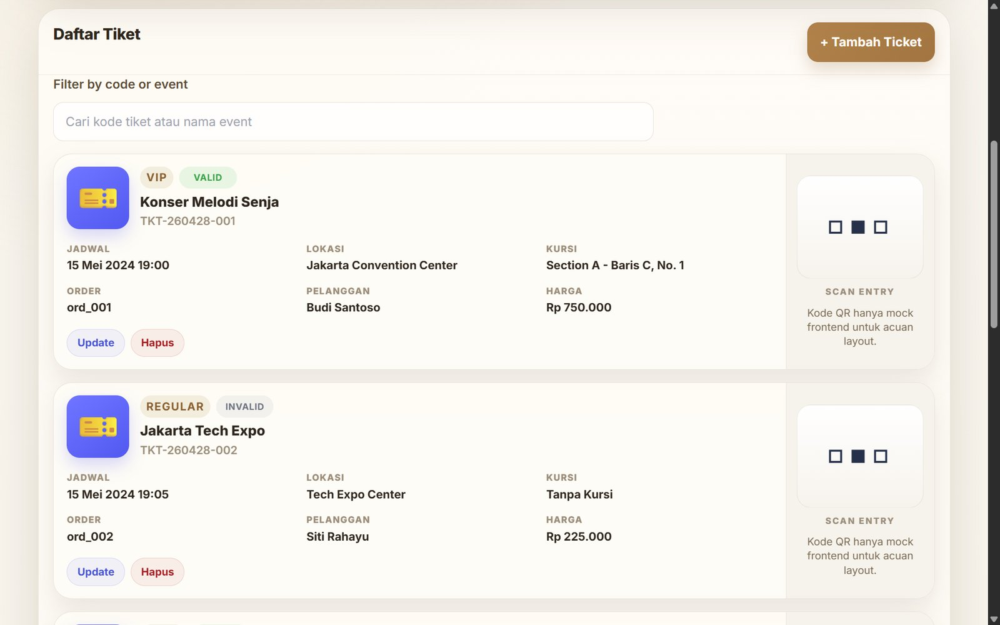
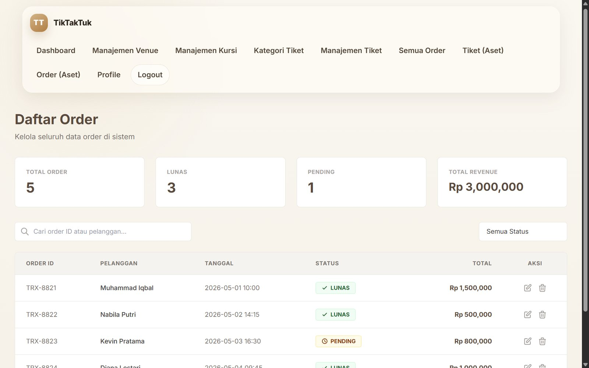
Platform pemesanan tiket acara dengan tiga peran: admin, penyelenggara, dan pelanggan. Bagian saya modul tiket dan kursi, plus halaman venue dan order.
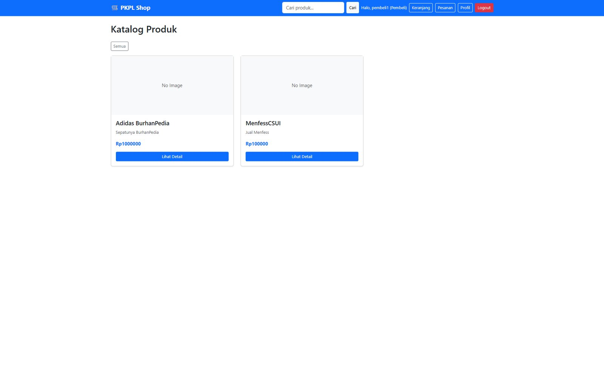
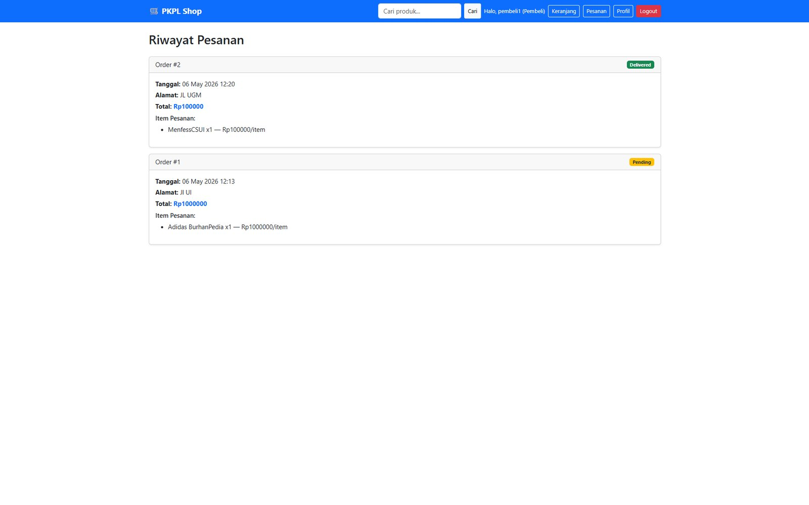
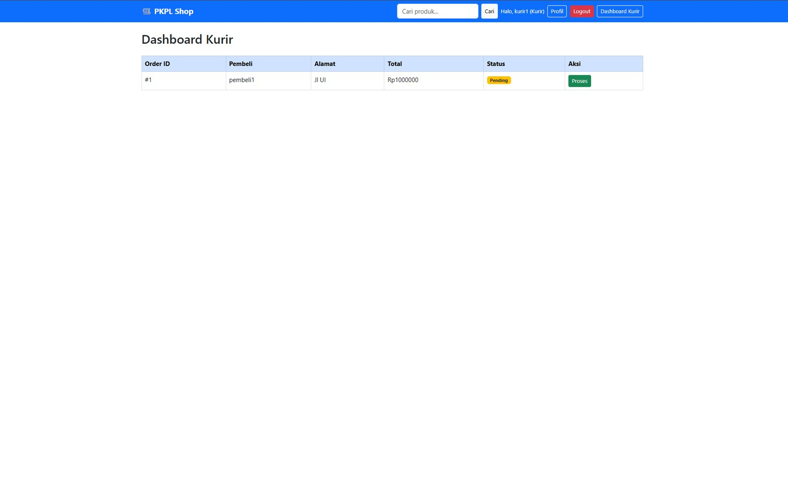
Marketplace dengan peran pembeli, penjual, kurir, dan admin. Fokusnya keamanan: pencegahan SQL injection, broken authentication, CSRF, dan XSS, lalu diuji lewat unit test dan penetration testing.